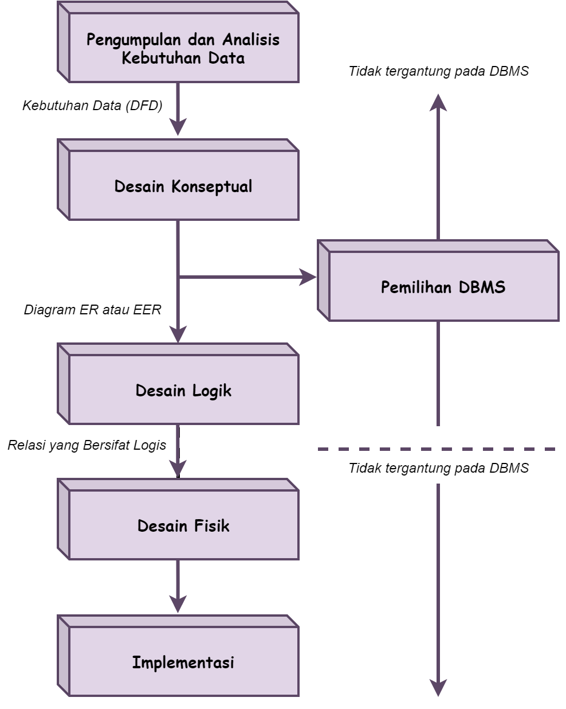
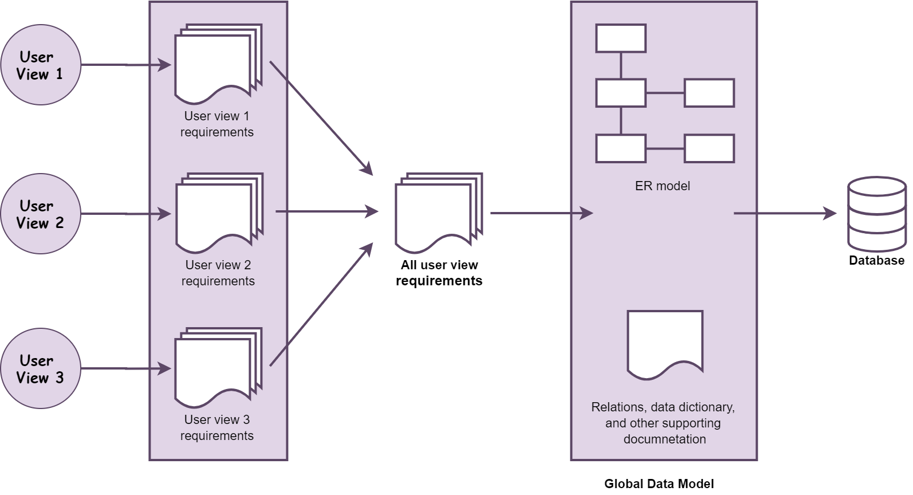
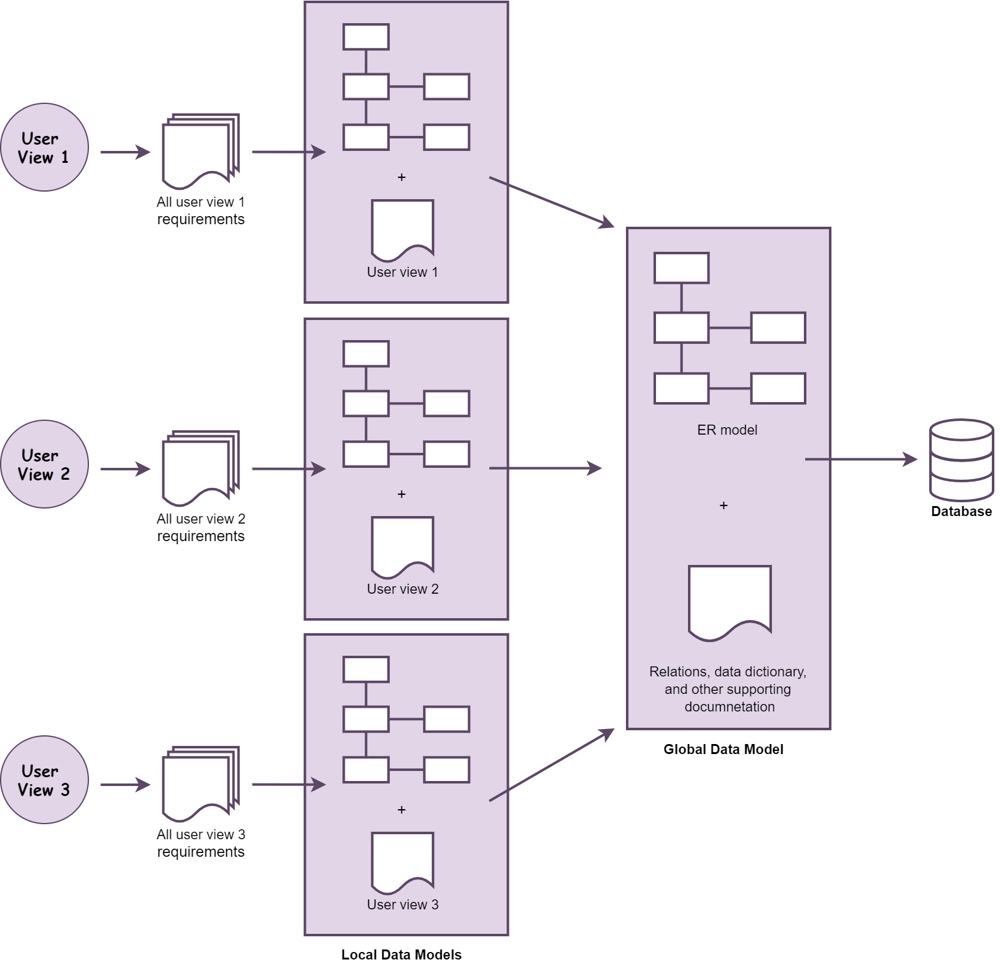
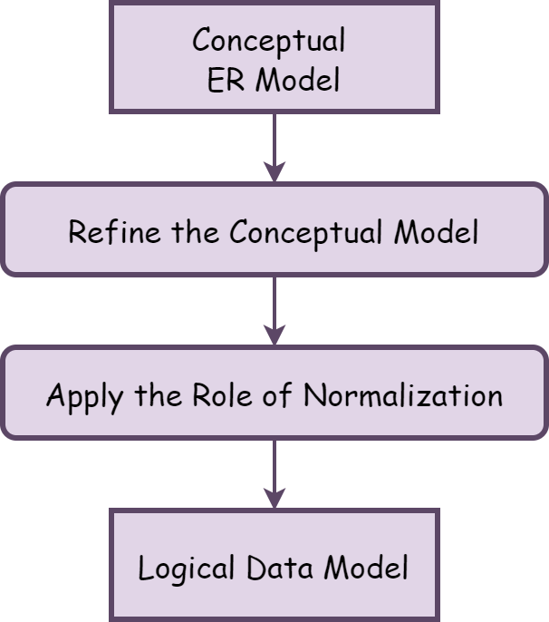
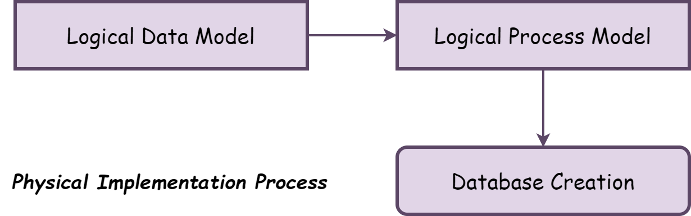

Introduction
Apa itu Database?
Database atau basis data adalah kumpulan informasi yang disimpan dalam komputer secara sistematik sehingga dapat diperiksa menggunakan suatu program komputer untuk memperoleh suatu informasi. Sistem database dirancang untuk mengelola banyak informasi. Pengelolaan data melibatkan penentuan struktur untuk penyimpanan informasi dan penyediaan mekanisme untuk manipulasi informasi. Selain itu, sistem database harus memastikan keamanan informasi yang disimpan, meskipun sistem mengalami crash atau upaya akses yang tidak sah. Jika data akan dibagikan di antara beberapa pengguna, sistem harus menghindari kemungkinan hasil yang tidak wajar.
Apa itu Desain Database?
Desain Basis Data adalah kumpulan proses yang memfasilitasi perancangan, pengembangan, implementasi, dan pemeliharaan sistem manajemen data perusahaan. Basis data yang dirancang dengan benar mudah dipelihara, meningkatkan konsistensi data, dan hemat biaya dalam hal ruang penyimpanan disk. Desainer database memutuskan bagaimana elemen data berkorelasi dan data apa yang harus disimpan.
`
- Menyajikan data dan hubungan antar data yang diperlukan oleh pemakai dan aplikasi
- Mempermudah pemahaman informasi
- Melengkapi model data yang mendukung transaksi-transaksi yang diperlukan
- Mendukung proses permintaan dan performance seperti waktu respons, waktu proses dan tempat peyimpanan.
PROSES DESAIN DATABASE
Secara khusus proses dari desain database berisikan 2 aktifitas paralel. Aktifitas pertama melibatkan desain dari isi data dan struktur database, sedangkan aktifitas kedua melibatkan desain pemrosesan database dan aplikasi-aplikasi perangkat lunak. Kedua aktifitas ini saling menjalin dan saling mempengaruhi satu sama lain. Dalam melakukan perancangan/mendesain sebuah database agar menjadi database yang handal dan tangguh, terdapat beberapa tahapan yang perlu dilakukan. Langkah-langkah tersebut diantaranya:

Tahap 1: Pengumpulan dan Analisis Kebutuhan Data
Dalam menentukan kebutuhan suatu sistem database, pertama-tama kita harus mengenal bagian-bagian lain dari sistem informasi yang akan berinteraksi dengan sistem database, termasuk para pemakai yang ada dan para pemakai yang baru serta aplikasinya. Kebutuhan-kebutuhan dari para pemakai dan aplikasi inilah yang kemudian dikumpulkan dan dianalisa.
Adapun Aktifitas yang dilakukan dalam Pengumpulan dan Analisis Kebutuhan Data, yaitu:
- Menentukan aplikasi utama dan kelompok user yang akan menggunakan database.
- Mempelajari dan menganalisa dokumen yang sudah ada yang berhubungan dengan aplikasi. Dokumen lain seperti policemanual, form, report dan struktur organisasi ditinjau kembali untuk menentukan dan menguji apakah dokumen-dokumen tersebut berpengaruh terhadap kumpulan data dan proses spesifikasi.
- Analisa lingkungan operasi dan pemrosesan data, teermasuk tipe transaksi dan frekuensi penggunaannya dan aliran informasi dalam sistem. Karakteristik geografi seperti pemakai, transaksi asli, tujuan pelaporan serta data input dan output diperinci.
- Penulisan respon dari kuesioner yang telah dikumpulkan dari para pemakai database yang berpotensi untuk mendapatkan informasi yang berharga.
Dan perlu diketahui terdapat 3 pendekatan dalam manajemen kebutuhan, yaitu:
- Terpusat (centrelized)
- View Integration
- Kombinasi keduanya
Kombinasi keduanya dapat diartikan sebagai pendekatan kombinasi dari pendekatan terpusat dan pendekatan view integration.


Tahap 2: Desain Database Konseptual
Pada tahap ini dimanfaatkan untuk menghasilkan skema konseptual sebuah database menggunakan konsep model data tingkat tinggi. Dalam tahap ini ditampilkan objek yang menjadi domain database, tetapi belum dibahas tentang rincian implementasi.
Adapun Tahap desain database secara konseptual memiliki 2 aktifitas paralel, yaitu:
- Desain Skema Konseptual
Dalam aktiftas ini yang perlu diperhatikan yaitu: - Memberikan gambaran yang lengkap dari struktur basis data yaitu arti, hubungan, dan batasan-batasan.
- Conceptual schema bersifat tetap.
- Alat komunikasi antar pemakai basis data, designer, dan analis.
- Harus bersifat: Mampu menyatakan relationship, Diagram, Formal, minimum dalam menyatakan spesifikasi data (tidak ada duplikasi), dan Simple
- Desain Transaksi dan Aplikasi
Dalam aktiftas ini yang perlu diperhatikan, yaitu:
- Pada saat basis data didesain, aplikasi dari transaksi utama harus sudah diketahui.
- Transaksi-transaksi baru dapat didefinisikan kemudian.
- Tentukan karakteristik dari transaksi dan periksa apakah basis data sudah memuat semua informasi untuk melaksanakan transaksi.
- Transaksi dapat dibagi dalam 3 bagian yaitu: retrieval, update, mixed.
- Tahap 2A dan 2B sebaiknya dilaksanakan secara paralel dengan menggunakan umpan balik agar didapat skema desain dan transaksi yang stabil.
Tahap 3: Pemilihan DBMS
Langkah Utama dalam memilih DBMS (Connoly), yaitu:
- Lihat informasi DBMS dari referensi
- Buat daftar 2 atau 3 produk
- Evaluasi produk
- Rekomendasi dan buat reportnya
Faktor-faktor dalam pemilihan DBMS, yaitu:
- Faktor Teknis
- DBMS (relational, hirarki , atau jaringan).
- Struktur penyimpan dan akses path yang didukung DBMS.
- Ketersediaan antar muka pemakai dan pemrogram tipe bahasa query tingkat tinggi ketersediaan alat bantu pengembangan kemampuan berhubungan dengan DBMS lain melalui media standard.
- Pilihan arsitektur yang berhubungan dengan operator client server dan lain sebagainya.
- Faktor Ekonomi
- Software Acquisiton Cost
Pembelian perangkat lunak termasuk pilihan bahasa pilihan antar muka seperti form, menu dan antar muka Web berbasis GUI, pilihan recovery/backup. - Maintenance Cost
Berhubungan dengan harga layanan pemeliharaan standar dari vendor dan untuk menjaga versi DBMS tetap up to date. - Hardware Acquisition Cost
Perangkat keras baru mungkin diperlukan seperti memory, terminal, disk drive dan controller baru atau penyimpan DBMS khusus. - Database Creation and Conversion Cost
Biaya pembuatan sistem basis data dari konversi sistem yang sudah ada ke perangkat lunak DBMS baru. - Personal Cost
Akuisisi perangkat lunak DBMS untuk pertama kali oleh organisasi biasanya dilakukan dengan reorganisasi departemen data processing. - Training Cost
Karena DBMS biasanya berupa sistem komplek personal harus ditraining menggunakan dan memprogram DBMS Training diperlukan pada semua level, termasuk programming, pengembangan aplikasi dan administrasi basis data. - Operating Cost
Biaya operasi lanjutan dari sistem basis data biasanya tidak termasuk dalam evaluasi.
- Software Acquisiton Cost
- Faktor Organisasi
- Struktur Data
Jika data yang disimpan dalam database mengikuti struktur hirarki, maka suatu jenis hirarki dari DBMS harus dipikirkan. - Familiarity of Personnel with the System
Jika staff programming dalam organisasi familiar dengan DBMS tertentu, dapat mengurangi biaya training dan waktu pembelajaran. - Availability of Vendor Service
Keberadaan fasilitas pelayanan penjual untuk membantu memecahkan beberapa masalah sistem.
- Struktur Data
Tahap 4: Desain Database Secara Logika (Pemetaan Model Data)
Pada tahap ini dimanfaatkan untuk membuat skema konseptual dan skema eksernal dalam model data dari DBMS terpilih.
Adapun tahap dalam proses pemetaan dibagai menjadi 2 bentuk, yaitu:
- Pemetaan yang Tidak Tergantung pada Sistem (System Independet Mapping)
Pada bentuk ini, pemetaan tidak mempertimbangkan karakteristik khusus atau kasus khusus yang diaplikasikan ke implementasi DBMS dari model data. - Penyesuaian Skema ke DBMS yang Spesifik (Tailoring the Schemas to Specific DBMS)
DBMS yang berbeda mengimplementasikan model data dengan menggunakan pemodelan khusus. Hasilnya merupakan pernyataan DDL dari DBMS yang dipilih.
Di bawah ini merupakan tahap desain database secara logika:

Keluaran dari tahap ini merupakan seperangkat perintah-perintah DDL dalam bahasa DBMS yang dipilih yang menentukan tingkat skema konseptual dan eksternal dari sistem database. Tetapi dalam beberapa hal, perintah-perintah DDL memasukkan parameter-parameter rancangan fisik sehingga DDL yang lengkap harus menunggu sampai tahap desain database secara fisik telah lengkap.
Tahap 5: Desain Database Secara Fisik
Desain database secara fisik merupakan proses pemilihan struktur penyimpanan dan jalur akses pada file-file basis data untuk mencapai penampilan yang terbaik pada bermacam-macam aplikasi. Kemudian dirancang spesifikasi-spesifikasi untuk basis data yang disimpan yang berhubungan dengan struktur-struktur penyimpanan fisik, penempatan record dan jalur akses.
Di bawah ini merupakan tahap desain database secara fisik:

Beberapa petunjuk dalam pemilihan perancangan basis data secara fisik, yaitu:
- Waktu Respon
Waktu transaksi basis data dimaksudkan untuk menerima respon selama eksekusi dan Waktu respon dipengaruhi waktu akses basis data untuk data item yang ditunjuk oleh suatu transaksi. - Penggunaan Ruang Penyimpanan
Jumlah ruang penyimpanan yang digunakan oleh file basis data dan struktur-struktur jalur akses. - Transaction Throughput
Rata-rata jumlah transaksi yang dapat diproses per menit oleh sistem basis data, dan merupakan parameter kritis dari sistem transaksi (misal: digunakan pada pemesanan tempat di pesawat, bank, dll).
Tahap 6: Implementasi Database
Di bawah ini merupakan tahapan dalam pengimplementasian Basis Data, yaitu sebagai berikut:
- DBA bersama desainer basis data menggunakan pernyataan dalam DDL, SDL (Storage Definition Language) dari DBMS terpilih digunakan untuk membuat skema basisdata dan file basis data (kosong).
- Basis data kemudian dipopulasikan dengan data.
- Jika data diubah dari sistem komputerisasi sebelumnya, rutin konversi diperlukan untuk format kembali data untuk menyimpan ke basis data baru.
- Transaksi basis data harus diimplementasikan dengan aplikasi yang dibuat programmer.
- Melakukan uji coba kode porgram dengan perintah DML.
- Jika transaksi siap dan data disimpan ke basis data, tahap rancangan dan implementasi selesai dan tahap operasi dari sistem basis data dimulai.
Tahap Lanjutan
- Konversi & Loading Data
- Tahap ini dilakukan apabila sistem basis data yang ada digantikan sistem basis data baru.
- Semua data yg ada ditransfer ke basis data baru & konversi aplikasi yang ada unttk basis data baru.
- Testing & Evaluasi
- Dilakukan pengujian utk kinerja, integritas, pengaksesan, konkuren, keamanan dari basis data.
- Dilakukan paralel dengan pemrograman aplikasi.
- Jika hasil yang dilakukan gagal, maka:
- Diuji berdasarkan referensi manual
- Modifikasi perancangan fisik
- Modifikasi perancangan logik
- Upgrade atau pengubahan perangkat lunak DBMS perangkat keras - Pengoperasian & Perawatan
- Pengoperasian basis data setelah divalidasi.
- Buat daftar 2 atau 3 produk
- Memonitor kinerja sistem jika tidak sesuai perlu reorganisasi basis data.
- Perawatan upgrade sistem aplikasi basis data jika diperlukan.
Referensi
Abraham Silberschatz: Database System Concepts - 7th edition
Gunadarma: Proses Perancangan Database
Guru99: Database Design Tutorial